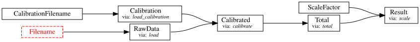
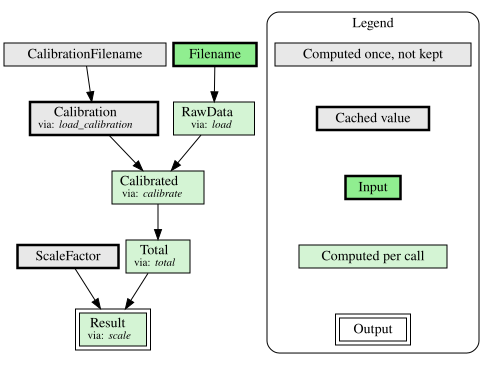
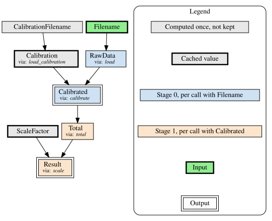

Stages#
Overview#
This page covers repeating part of a computation over many values, such as a list of files.
A workflow often has a part that runs once, such as loading a calibration or building a mask, and a part that runs many times: per file, per channel of a file, or per chunk of a stream. The results of the repeated part are then combined, and the rest of the workflow runs once on the combined value.
Sciline expresses this with Stage, which cuts a flat pipeline into the part that runs once and the part that runs many times. Accumulators combine the results of the repeated part.
A stage#
We start with a pipeline similar to the one in Getting Started. Loading the calibration stands in for an expensive step that does not depend on the data file. The provider appends to a list so we can count how often it runs:
[1]:
import math
import operator
from typing import NewType
import sciline
_fake_filesystem = {
'file102.txt': [1.0, 2.0, float('nan'), 3.0],
'file103.txt': [1.0, 2.0, 3.0, 4.0],
'file104.txt': [1.0, 2.0, 3.0, 4.0, 5.0],
'file105.txt': [1.0, 2.0, 3.0],
'calib_2025.txt': [0.5],
'calib_2026.txt': [0.25],
}
# 1. Define domain types
Filename = NewType('Filename', str)
RawData = NewType('RawData', list)
CalibrationFilename = NewType('CalibrationFilename', str)
Calibration = NewType('Calibration', float)
Calibrated = NewType('Calibrated', list)
Total = NewType('Total', float)
ScaleFactor = NewType('ScaleFactor', float)
Result = NewType('Result', float)
# 2. Define providers
calibration_loads = []
def load(filename: Filename) -> RawData:
"""Load the data from a file."""
return RawData(_fake_filesystem[filename])
def load_calibration(filename: CalibrationFilename) -> Calibration:
"""Load the calibration factor."""
calibration_loads.append(filename)
return Calibration(_fake_filesystem[filename][0])
def calibrate(raw: RawData, calibration: Calibration) -> Calibrated:
"""Drop NaNs and apply the calibration."""
return Calibrated([x * calibration for x in raw if not math.isnan(x)])
def total(data: Calibrated) -> Total:
"""Sum the calibrated data."""
return Total(sum(data))
def scale(total: Total, factor: ScaleFactor) -> Result:
"""Scale the total."""
return Result(total * factor)
# 3. Create pipeline
providers = [load, load_calibration, calibrate, total, scale]
params = {CalibrationFilename: 'calib_2025.txt', ScaleFactor: 2.0}
pipeline = sciline.Pipeline(providers, params=params)
pipeline.visualize(Result, graph_attr={'rankdir': 'LR'})
[1]:

Filename has no value, since we want Result for several files and supply one file name at a time. A Stage cuts the pipeline at a set of inputs, keys whose values are supplied on each call, and computes the values of a set of outputs from them. Everything the outputs need that does not depend on the inputs is computed once, on first use. Of this part, the stage keeps the values that the per-call part reads, its cached values:
[2]:
stage = sciline.Stage(pipeline, outputs=(Result,), inputs=(Filename,))
{
f: stage.run({Filename: f})[Result]
for f in ['file102.txt', 'file103.txt', 'file104.txt']
}
[2]:
{'file102.txt': 6.0, 'file103.txt': 10.0, 'file104.txt': 15.0}
run was called three times, but the calibration was loaded once:
[3]:
calibration_loads
[3]:
['calib_2025.txt']
The stage tells us where it cut the pipeline. visualize draws the part of the pipeline the stage uses, with the inputs, the part computed once, the cached values, and the per-call part marked:
[4]:
stage.visualize(graph_attr={'rankdir': 'TD'})
[4]:

cached and per_call are tuples of keys and keys is a frozenset. cached lists the cached keys, and cached_values() returns their values, computing them first if needed. per_call lists the keys whose values depend on the inputs and are computed on each call. keys contains every key the stage uses, computed once or per call:
[5]:
stage.cached
[5]:
(__main__.Calibration, __main__.ScaleFactor)
[6]:
stage.per_call
[6]:
(__main__.RawData,
__main__.Filename,
__main__.Calibrated,
__main__.Total,
__main__.Result)
[7]:
stage.keys
[7]:
frozenset({__main__.Calibrated,
__main__.Calibration,
__main__.CalibrationFilename,
__main__.Filename,
__main__.RawData,
__main__.Result,
__main__.ScaleFactor,
__main__.Total})
An input does not have to be a parameter. If it is an intermediate result, its provider and everything upstream of it are cut off, and the stage computes only what lies downstream. Here Total is supplied, so nothing is loaded and only ScaleFactor is cached; the cut-off keys are not in keys either:
[8]:
from_total = sciline.Stage(pipeline, outputs=(Result,), inputs=(Total,))
from_total.cached, from_total.per_call, from_total.keys
[8]:
((__main__.ScaleFactor,),
(__main__.Total, __main__.Result),
frozenset({__main__.Result, __main__.ScaleFactor, __main__.Total}))
[9]:
from_total.run({Total: 10.0})
[9]:
{__main__.Result: 20.0}
A stage is a snapshot of the pipeline at the time it is built. Set all parameters, except the inputs, before building it; changing the pipeline afterwards does not affect the stage.
Building several stages together#
Two stages built from the same pipeline may share work that each computes once. Each stage computes its cached values on first use, so two stages used independently both load the calibration. prepare_stages builds several stages from one pipeline, one for each tuple of outputs, and computes the cached values of all of them right away, in one run, so shared work is done once. inputs is shared: every stage is cut at each of these keys and
takes those that its outputs need. It returns the stages in the order of the outputs:
[10]:
calibration_loads.clear()
calibrated, totals = sciline.prepare_stages(
pipeline, inputs=(Filename,), outputs=[(Calibrated,), (Total,)]
)
calibration_loads
[10]:
['calib_2025.txt']
Each stage keeps only its own cached values, available from cached_values():
[11]:
calibrated.cached_values(), totals.cached_values()
[11]:
({__main__.Calibration: 0.5}, {__main__.Calibration: 0.5})
Combining over files#
To combine over files, we need two stages: one from Filename to the key at which we combine, the accumulation key, and one from that key to the result. Between them, an accumulator combines the values computed per file. An accumulator is any object with a push method and a value property, see Accumulator.
Here we combine Calibrated by concatenation. Buffered is an accumulator that keeps every pushed value and applies a function to all of them when the combined value is read:
[12]:
from sciline.accumulators import Buffered, Reduced
def concat(*lists: list) -> list:
return [x for values in lists for x in values]
def combine_files(contribute, finalize, accumulators, filenames):
for filename in filenames:
values = contribute.run({Filename: filename})
for key in contribute.per_call_outputs:
accumulators[key].push(values[key])
return finalize.run({key: acc.value for key, acc in accumulators.items()})
files = ['file102.txt', 'file103.txt', 'file104.txt', 'file105.txt']
contribute = sciline.Stage(pipeline, outputs=(Calibrated,), inputs=(Filename,))
finalize = sciline.Stage(pipeline, outputs=(Result,), inputs=(Calibrated,))
combine_files(contribute, finalize, {Calibrated: Buffered(concat)}, files)
[12]:
{__main__.Result: 37.0}
Calibrated was computed per file, the four lists were concatenated, and Total and Result were computed once from the concatenated list. combine_files is the driver: the code that calls the stages, here in a loop over files, and pushes their values into accumulators. It pushes per_call_outputs, the outputs that depend on the inputs. The section “Push only what depends on the files” below explains why. An accumulator keeps what was pushed into it, so each call of
combine_files takes new accumulators.
visualize_stages draws several stages together, with what each stage computes per call in its own color. Calibrated is an output of contribute and an input of finalize. The driver accumulates it between the two stages:
[13]:
sciline.visualize_stages(contribute, finalize, graph_attr={'rankdir': 'TD'})
[13]:

Buffered keeps every pushed value. For a sum of large arrays over many files, a running total is much cheaper. Reduced applies a binary function to the result so far and each pushed value, and keeps only the result. The function must be associative, so that values can be combined in groups and the group results combined again. It must not modify its arguments. Here we combine at Total instead, and sum as we go:
[14]:
contribute = sciline.Stage(pipeline, outputs=(Total,), inputs=(Filename,))
finalize = sciline.Stage(pipeline, outputs=(Result,), inputs=(Total,))
combine_files(contribute, finalize, {Total: Reduced(operator.add)}, files)
[14]:
{__main__.Result: 37.0}
The result is the same, but only one number per file is pushed, and the accumulator keeps only the running total.
Push only what depends on the files#
combine_files pushes per_call_outputs, not all outputs of the stage. An output that does not depend on the inputs, such as Calibration, is computed once and returned by every call. Pushed into a sum, it would be counted once per file:
[15]:
with_calibration = sciline.Stage(
pipeline, outputs=(Total, Calibration), inputs=(Filename,)
)
with_calibration.outputs, with_calibration.per_call_outputs
[15]:
((__main__.Total, __main__.Calibration), (__main__.Total,))
The final stage takes only the per-call outputs as inputs. It caches Calibration, computed once:
[16]:
finalize_with_calibration = sciline.Stage(
pipeline,
outputs=(Result, Calibration),
inputs=with_calibration.per_call_outputs,
)
combine_files(
with_calibration,
finalize_with_calibration,
{Total: Reduced(operator.add)},
files,
)
[16]:
{__main__.Result: 37.0, __main__.Calibration: 0.5}
Files in parallel#
contribute.run is a plain function of the values of the inputs, so any executor can call it. Sciline does not run anything in parallel itself; the driver decides how to iterate over the files. A stage can be called from several threads at once, and the cached values are still computed only once:
[17]:
from concurrent.futures import ThreadPoolExecutor
total = Reduced(operator.add)
with ThreadPoolExecutor() as executor:
for values in executor.map(lambda f: contribute.run({Filename: f}), files):
total.push(values[Total])
finalize.run({Total: total.value})
[17]:
{__main__.Result: 37.0}
Results per file without combining#
To compute the value of a key for each file without combining, call a stage in a loop. The calibrated stage from above caches the calibration and computes Calibrated per file:
[18]:
{f: calibrated.run({Filename: f})[Calibrated] for f in files}
[18]:
{'file102.txt': [0.5, 1.0, 1.5],
'file103.txt': [0.5, 1.0, 1.5, 2.0],
'file104.txt': [0.5, 1.0, 1.5, 2.0, 2.5],
'file105.txt': [0.5, 1.0, 1.5]}